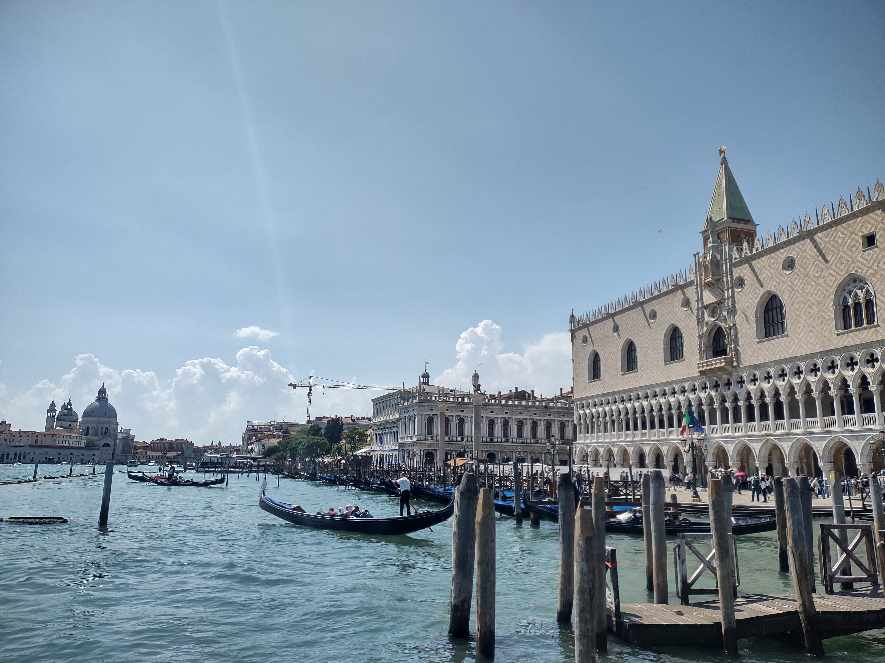
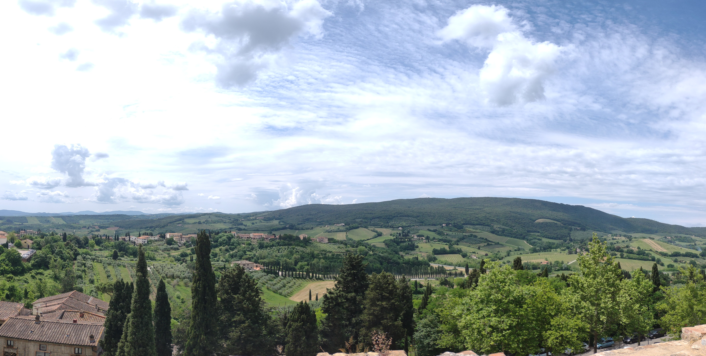
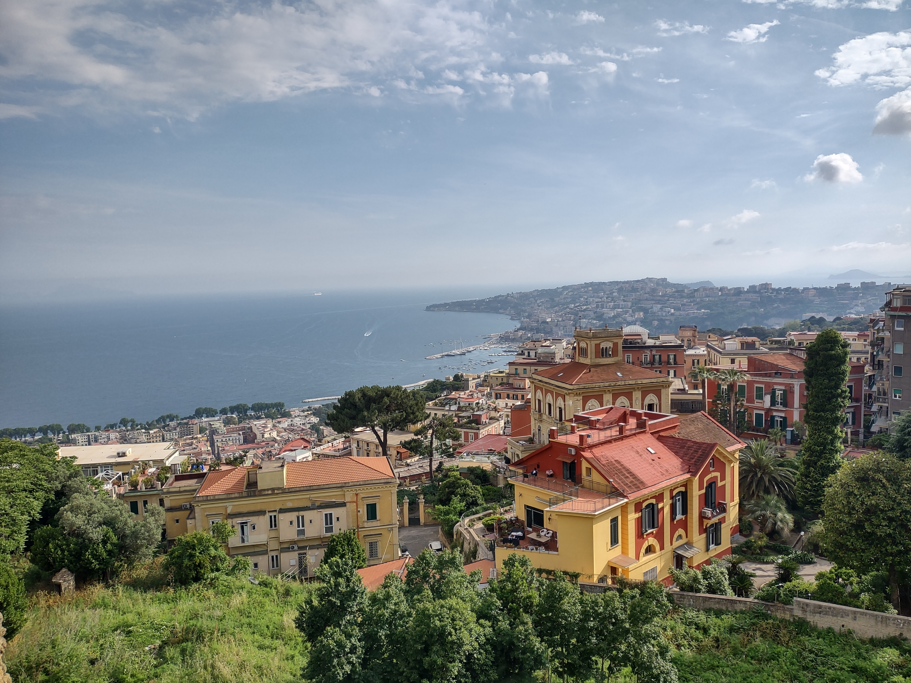
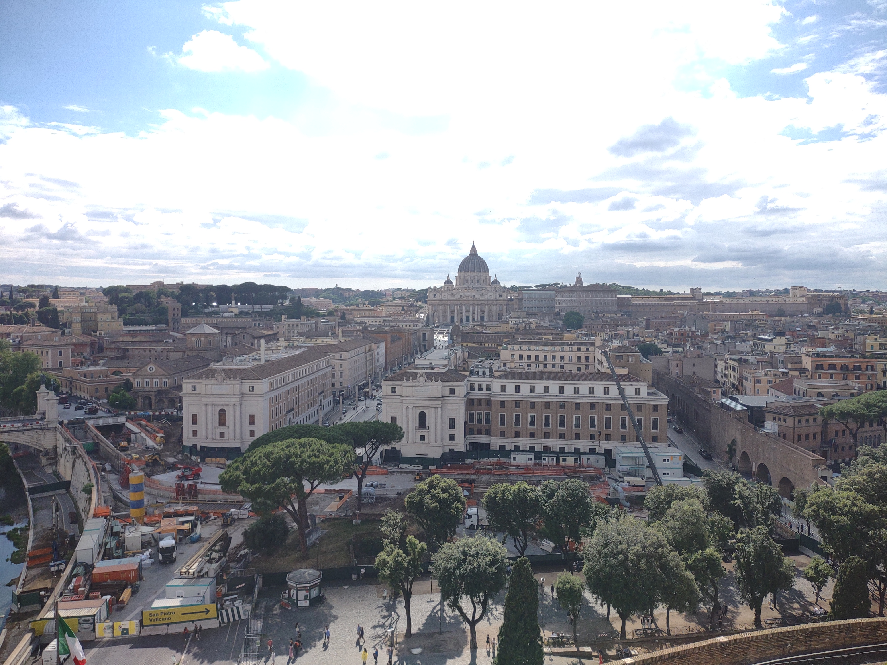

Italy
If you are thinking about a country full of diversity, then Italy it is (besides Taiwan, of course). Every place, every town, and every city feel so different in terms of culture, landscape, and food. I would definitely like to visit again.



